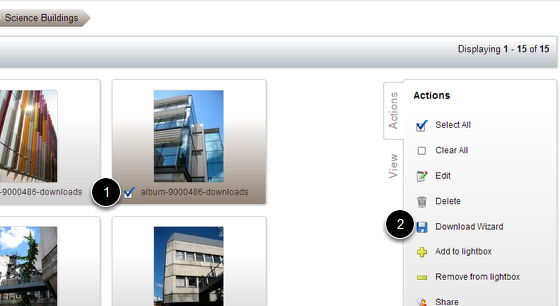
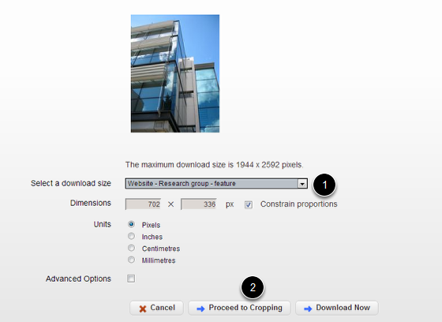
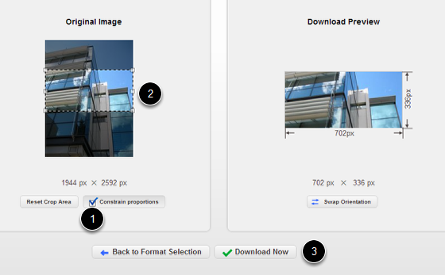
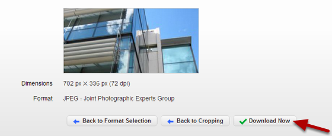
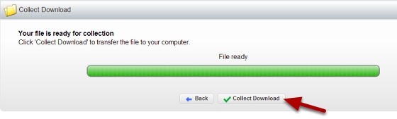

Download and Crop an Image from the Image Management System
You can download and crop images in the correct sizes for different sections of your website. This tutorial shows you how to download an image of the correct size for a Research Group page (702 x 336 pixels).
Select the image

- Click in the check box next to the image you would like to download.
- Click on Download Wizard.
Select the size

- Select the download size (in this case for a Research group page - 702 x 336 pixels).
- Click on Proceed to Cropping.
Crop the image

- Click on Constrain proportions.
- Move the crop box around the image to select the part of the image you would like.
- Click on Download Now.
Download the image

Click on Download Now.
Collect the image

Click on Collect Download.